1설치 화면 재현
install.cmd를 더블클릭하면 뜨는 콘솔. 관리자 권한 없이 사용자 계정 영역에만 설치합니다.
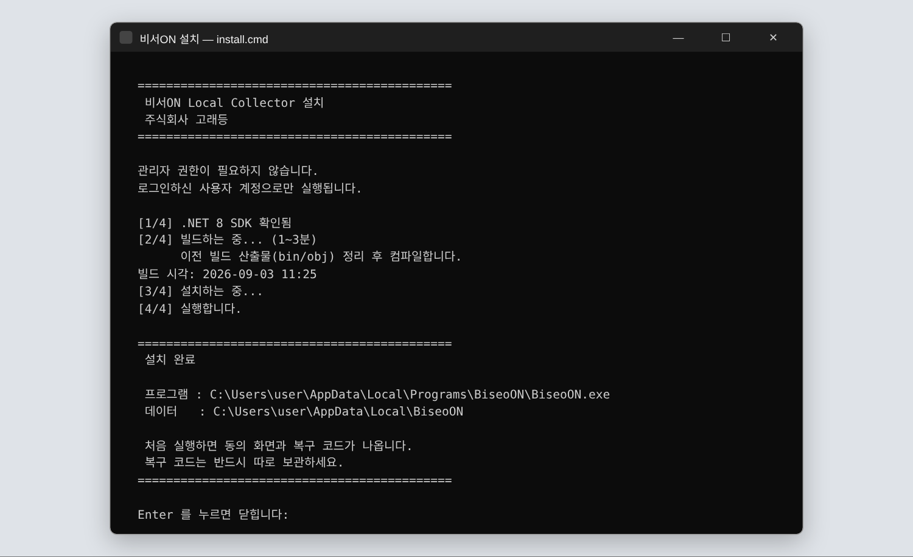
무엇을 하는가
| [1/4] .NET 8 SDK | 시스템에 .NET 8 SDK가 없으면 %LOCALAPPDATA%\Microsoft\dotnet에 사용자 전용으로 내려받아 설치. 처음엔 몇 분, 두 번째부터는 건너뜀. |
| [2/4] 빌드 | bin/obj를 먼저 지우고 dotnet publish -c Release -r win-x64 --self-contained -p:PublishSingleFile=true. 압축 풀린 소스는 타임스탬프가 오래돼 "변경 없음"으로 건너뛰는 사고가 있어 강제 삭제가 들어감. 빌드 시각 줄로 새 빌드인지 바로 확인. |
| [3/4] 설치 | %LOCALAPPDATA%\Programs\BiseoON\BiseoON.exe 단일 파일로 복사, 바탕화면 바로가기 생성. |
| [4/4] 실행 | 곧바로 비서ON 실행 → 처음이면 동의 화면(2번)으로 이어짐. |
| 실패 시 | "설치에 실패했습니다" + 예외 메시지 + "이 화면을 캡처해서 알려주시면 원인을 확인하겠습니다". Enter를 눌러야 닫히므로 창이 사라지지 않음. |
.cmd에 한글을 넣으면 CP949 문제로 깨져서 .cmd는 ASCII 실행기 역할만 하고, 모든 로직과 한글 메시지는 UTF-8 BOM .ps1에 있습니다. uninstall.cmd, kakao-test.cmd, kakao-docs.cmd도 같은 구조.2동의 화면 — 비서ON 시작하기 실제 캡처
최초 실행 시 단 한 번. 무엇을 읽고 어디에 저장하는지 설명하고, 검사할 폴더를 고른 뒤 동의해야 시작됩니다. 소스: ConsentForm.cs
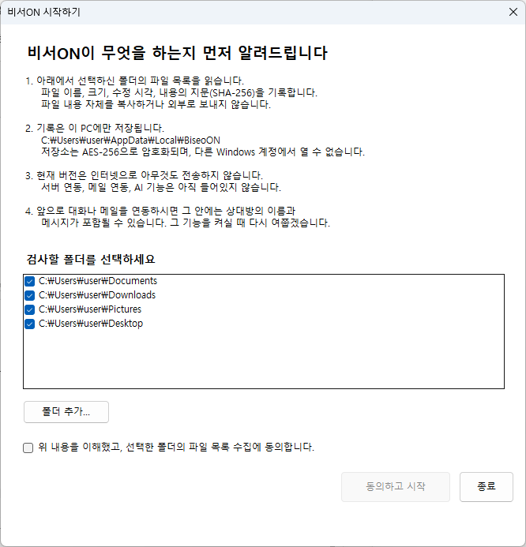
화면 구성
| 설명 1~5 | ① 파일 목록만 읽는다 — 이름·크기·수정 시각·SHA-256 지문. 내용 복사·외부 전송 없음 ② 기록은 이 PC(%LOCALAPPDATA%\BiseoON)에만, AES-256 암호화, 다른 Windows 계정에서 못 엶 ③ 현재 버전은 인터넷 전송 없음, 서버·메일·AI 기능 없음 ④ 대화·메일 연동 시 상대방 이름·메시지가 포함될 수 있어 그때 다시 묻겠다 ⑤ 트레이에서 언제든 중지·삭제 가능 |
| 폴더 목록 | 체크박스 리스트. 내 문서\카카오톡 받은 파일이 기본 위치에 있으면 자동 감지되어 맨 위에 추가됨(CollectorConfig.DetectKakaoDownloadFolder()). 체크를 풀면 그 폴더는 스캔 안 함. |
| 폴더 추가… | FolderBrowserDialog. 카카오톡 다운로드 위치를 바꾼 사용자는 여기서 지정. |
| 동의 체크박스 | "위 내용을 이해했고, 선택한 폴더의 파일 목록 수집에 동의합니다." 체크해야 버튼 활성. |
| 동의하고 시작 | 폴더 0개면 "폴더를 최소 하나 선택해 주세요." 안내. 통과하면 consent.json(동의 시각·버전) 기록 → 마스터 키 생성 → 3번 복구 코드 화면. |
| 종료 | 아무것도 만들지 않고 프로그램 종료. |
3복구 코드 화면 재현
동의 직후 한 번만 표시. 암호화 DB를 다른 PC·다른 계정에서 다시 열 수 있는 유일한 열쇠입니다. 소스: ConsentForm.cs(RecoveryCodeForm), SecureStore.cs
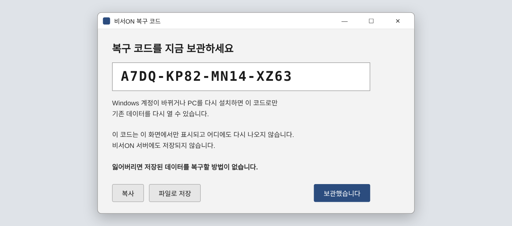
화면 구성과 동작
| 코드 표시 | Consolas 18pt 굵게, 읽기 전용. 형식 XXXX-XXXX-XXXX-XXXX. |
| 복사 | 클립보드에 복사, 버튼이 "복사됨"으로 바뀜. |
| 파일로 저장 | BiseoON_복구코드.txt 저장 대화상자. 내용: 코드 + 발급 시각 + "이 파일을 PC 밖(USB, 인쇄물 등)에 보관하세요". |
| 보관했습니다 | 창 닫힘. 이후 어디에도 다시 표시되지 않음. |
뒤에서 일어나는 일
- 마스터 키(32바이트 무작위) 생성 → SQLCipher AES-256 DB 키로 사용
- 마스터 키를 DPAPI(CurrentUser)로 감싼 사본 저장 → 같은 Windows 계정에서는 아무 입력 없이 자동 해제
- 복구 코드로 PBKDF2 600,000회 파생 키를 만들어 마스터 키를 AES-GCM으로 한 번 더 감싼 사본 저장 → 계정·PC가 바뀌어도 이 코드만 있으면 복구
- 코드 자체는 저장하지 않음. 서버에도 없음. 잃어버리면 데이터 복구 불가
4저장소 잠금 해제 — 복구 코드 입력 재현
평소에는 보이지 않는 화면. DPAPI 해제가 실패할 때(Windows 계정 변경, PC 재설치, 프로필 이동)만 나옵니다. 소스: Program.cs
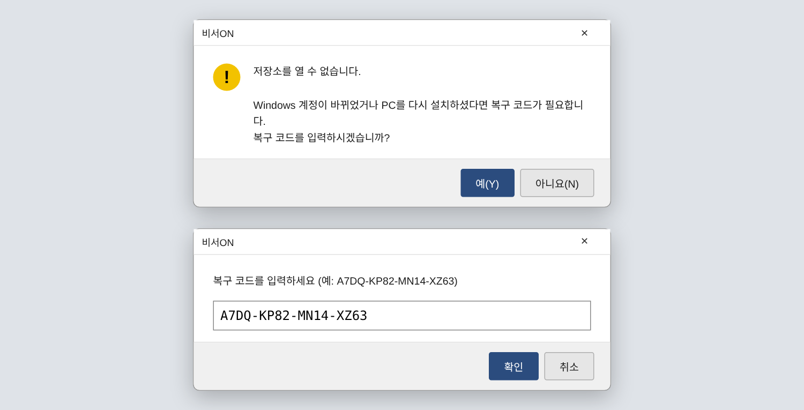
| 1단계 | "저장소를 열 수 없습니다. … 복구 코드를 입력하시겠습니까?" — 아니요면 종료(데이터는 그대로 보존). |
| 2단계 | 코드 입력. 맞으면 SecureStore.UnlockWithRecoveryCode()가 마스터 키를 풀고 현재 계정용 DPAPI 사본을 새로 만들어 다음부터는 묻지 않음. |
| 틀리면 | "복구 코드가 맞지 않습니다." 후 종료. 시도 횟수 제한은 없음(오프라인 자료라 의미 없음, PBKDF2 60만 회가 무차별 대입 비용). |
| 그 외 오류 | "로컬 저장소를 열지 못했습니다." + 예외 메시지, 로그에 DB 열기 실패 기록. |
AppPaths.LooksLikeServiceAccount()가 감지해 "비서ON이 시스템 계정으로 실행되었습니다 … 로그인한 사용자로 실행해 주세요"를 띄우고 종료합니다. V0~V3 원본의 '사용자 폴더 미접근' 문제를 원천 차단한 장치입니다.5상태 창 — 로컬 수집 상태 실제 캡처 재현
트레이 아이콘 더블클릭 또는 "상태 열기"로 뜨는 메인 창. 트레이가 아니라 이 창이 "실제로 무엇이 수집됐는지"를 보여줍니다. 소스: MainForm.cs, Db.cs
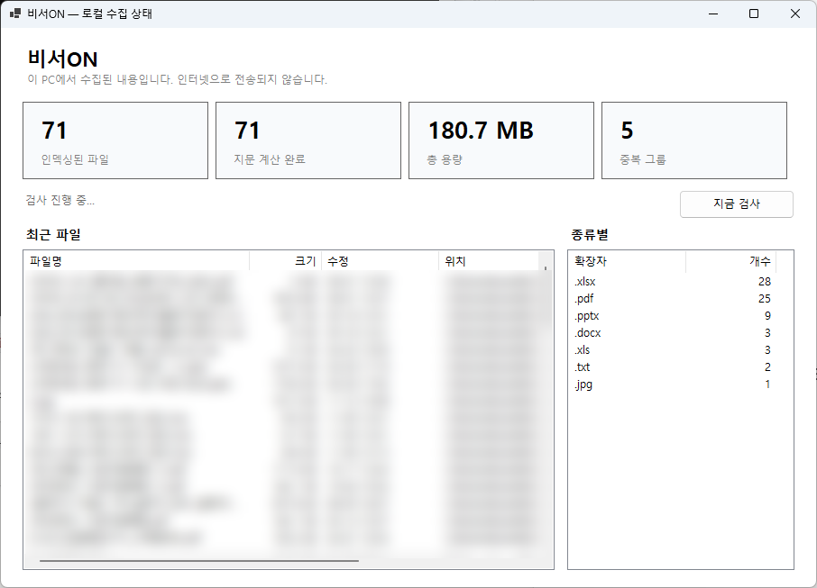

화면 구성
| 머리글 | "비서ON" + "이 PC에서 수집된 내용입니다. 인터넷으로 전송되지 않습니다." — 모든 화면에 반복되는 약속. |
| KPI 카드 4개 | 인덱싱된 파일(files 테이블 수) · 지문 계산 완료(SHA-256 끝난 수) · 총 용량 · 중복 그룹(같은 해시 2개 이상 묶음 수) |
| 상태줄 | 검사 전 "아직 검사하지 않았습니다." → 진행 중 "검사 진행 중…" → 완료 "마지막 검사 09-03 11:31 · 상태 OK · 신규 0건 · 자동 검사 주기 10분". 오류 시 "화면 갱신 실패: …" |
| 지금 검사 | 즉시 증분 스캔. 누르면 "검사 중…"으로 바뀌고 끝나면 복귀. 스캔은 Agent.cs가 10분 주기로도 자동 실행. |
| 최근 파일 | 수정 시각 내림차순 상위 목록. 열: 파일명 · 크기 · 수정 · 위치. 더블클릭하면 탐색기에서 해당 파일 선택(explorer /select). |
| 종류별 | 확장자별 개수 내림차순. |
실측 값
스캐너가 하는 일 (Scanner.cs)
- 증분: 크기+수정 시각이 같으면 재해싱 안 함. V0~V3의 "30초마다 전량 재해싱" 제거
EnumerationOptions.IgnoreInaccessible+ ReparsePoint 건너뛰기 → 정션·OneDrive 폴더에서 크래시 루프 없음- 500건마다 트랜잭션 커밋. 중간에 꺼져도 그때까지는 보존
- gap_ledger: PC가 꺼져 있던 구간을 기록(종료 시
RecordShutdownGap) → 나중에 "이 기간은 수집 공백"을 표시할 근거
고친 버그 2건 (기록용)
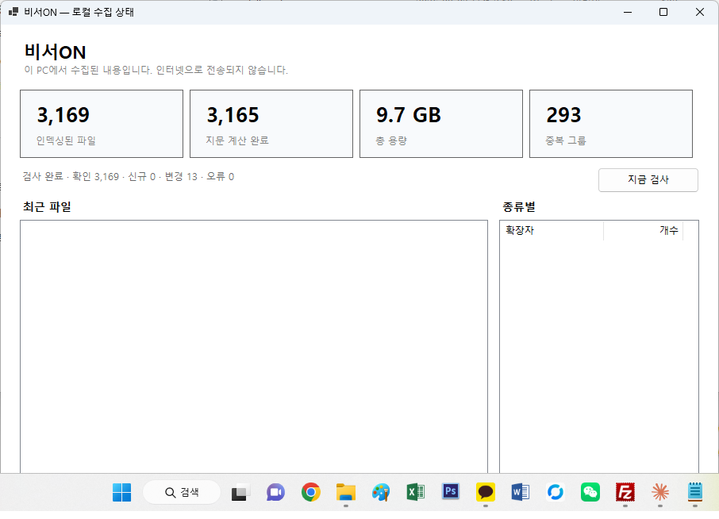
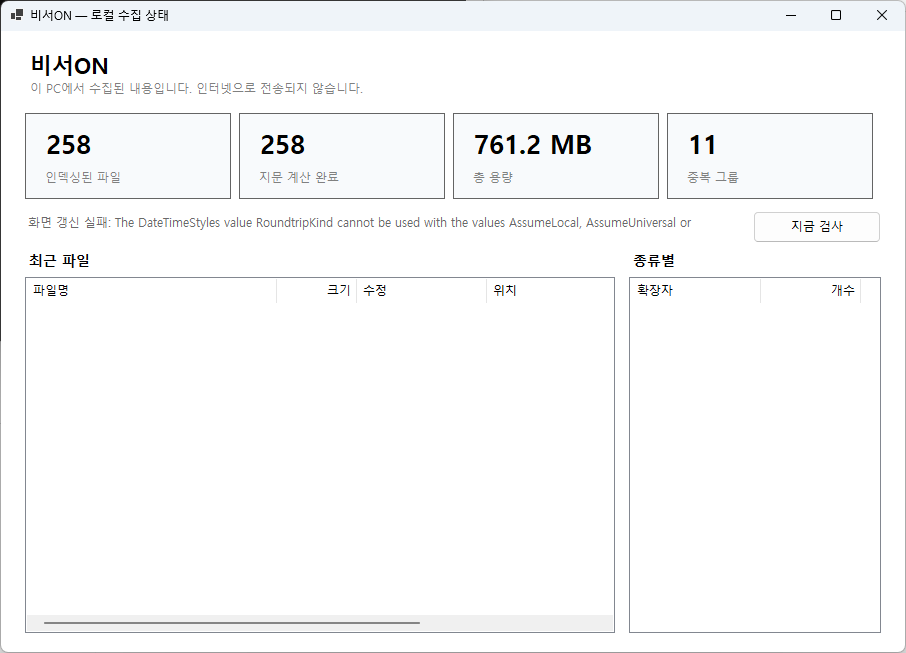
RoundtripKind | AdjustToUniversal 조합 불가. 수정: RoundtripKind만 사용.6트레이 메뉴 재현
비서ON은 창이 아니라 트레이에 상주합니다. 상태 창을 닫아도 수집은 계속되고, 모든 조작은 우클릭 메뉴에서. 소스: Program.cs

| 상태 열기 | 5번 상태 창 표시 + 즉시 갱신 |
| 지금 검사 | 증분 스캔 1회 즉시 실행 |
| Windows 시작 시 실행 | 체크 토글. HKCU\…\Run에 BiseoON 등록/해제. 관리자 권한 불필요 |
| 복구 코드 재발급… | "새 복구 코드를 발급합니다. 이전 코드는 즉시 무효가 됩니다. 계속할까요?" → 예 → 3번 화면이 새 코드로 다시 표시(SecureStore.RotateRecoveryCode()) |
| 카카오톡 내보내기 폴더 열기 | 내 문서\비서ON\카카오톡 내보내기를 (없으면 만들고) 탐색기로 엶. 카카오톡 "대화 내용 내보내기" 저장 위치로 쓰는 곳 |
| 데이터 폴더 열기 | %LOCALAPPDATA%\BiseoON — 암호화 DB·설정·vault |
| 로그 열기 | %LOCALAPPDATA%\BiseoON\logs 일자별 로그 |
| 종료 | 트레이 아이콘 제거, 종료 시각을 gap_ledger에 기록 |
Local\BiseoON.Collector.SingleInstance 뮤텍스로 두 번 실행을 막습니다. 바탕화면 아이콘을 또 눌러도 새 창이 뜨지 않고 기존 트레이가 유지됩니다.7카카오톡 파서 검증 — 파일 선택 재현
kakao-test.cmd 더블클릭 → 파일 선택 창. 아직 Collector에 붙지 않은 파서를 실제 내보내기 파일로 검증하는 개발·검수용 진입점입니다. 소스: scripts/kakao-test.ps1
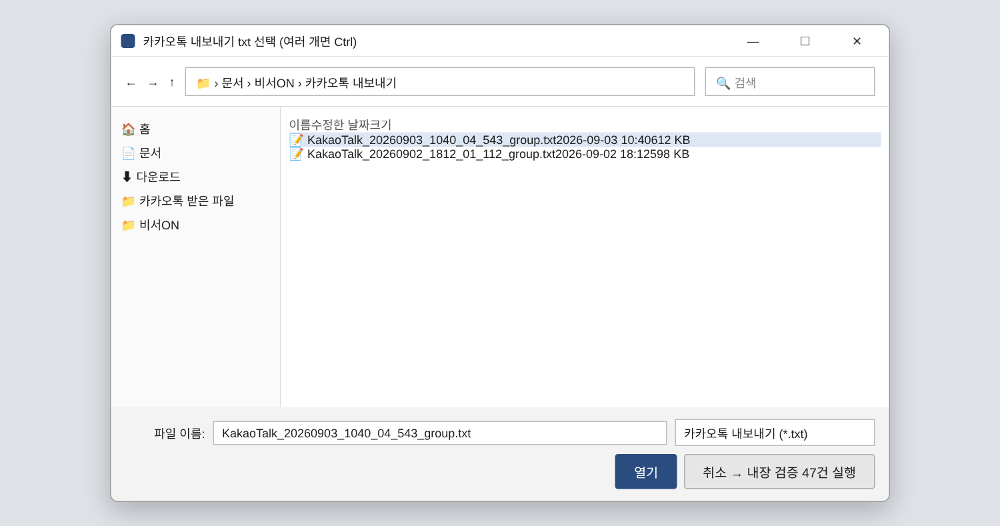
내 문서\비서ON\카카오톡 내보내기라 카카오톡에서 거기로 저장하면 바로 보임.| txt 1개 선택 | 파싱 결과 요약(8번) |
| txt 2개 선택 (Ctrl) | 두 Export의 재대조 결과 — UNCHANGED / ADDED / REMOTE_DELETION_OBSERVED / MISSING_IN_NEW / AMBIGUOUS 건수 |
| 취소 | 내장 검증 47건 실행(fixtures: 모바일형 전/후, PC형, 실제 패턴, 미지 형식) |
| 옵션 | --files "폴더" 받은 파일 폴더 지정 · --full 본문 포함(로그 미기록) · --docs 안 붙은 문서 진단(로그 미기록) |
.cmd에 파일을 끌어다 놓으면 터미널이 즉시 닫히거나 dotnet run이 --nologo를 프로그램 인자로 넘기는 문제가 있어, 빌드 후 dotnet <dll> 직접 실행 + OpenFileDialog로 바꿨습니다. 시스템에 .NET 6만 있어도 DOTNET_ROOT를 사용자 설치본으로 잡아 동작합니다.8파서 검증 결과 (요약) 재현
22개월짜리 업무 단톡방 Export 1개를 넣었을 때의 실제 출력. 숫자는 실측, 본문은 기본적으로 표시하지 않습니다. 소스: KakaoExportParser.cs, ContentClassifier.cs, BiseoON.Kakao.Test/Program.cs
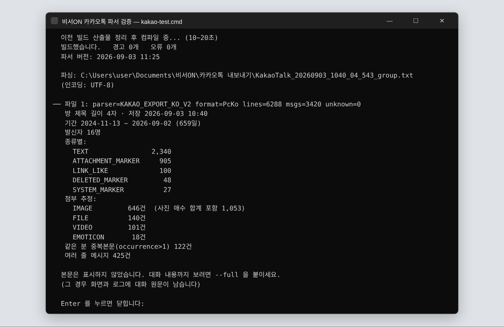
parser=KAKAO_EXPORT_KO_V2 … unknown=0이 "새 빌드로, 전부 해석됐다"는 뜻.읽는 법
| parser / format | 파서 버전 · 자동 판별된 형식(PcKo PC형 / MobileKo 모바일형). 미지 형식은 IMPORT_FORMAT_UNKNOWN으로 중지(fail-closed) — 반쯤 틀린 데이터를 저장하지 않음 |
| lines / msgs / unknown | 6,288줄 → 3,420건 메시지, 해석 못 한 줄 0. 여러 줄 메시지 425건이 한 건으로 합쳐짐 |
| 방 제목 길이 4자 | 제목 자체는 출력하지 않고 길이만 — 개인정보 원칙 |
| 종류별 | TEXT 2,340 · ATTACHMENT_MARKER 905(사진/파일/동영상 표시) · LINK_LIKE 100 · DELETED_MARKER 48("메시지가 삭제되었습니다") · SYSTEM_MARKER 27(입장·퇴장·톡게시판·페이스톡 부재중) |
| 첨부 추정 | 마커 문구에서 유형 추론 + confidence. "사진 N장"은 매수를 합산(646건 → 1,053장) |
| 같은 분 중복본문 122건 | 카카오 Export는 분 단위라 같은 분에 같은 본문이 반복됨 → dedup 키에 occurrence_index를 넣어야 하는 근거 |
실제 파일로 확정된 PC형 규칙
- 헤더
[이름] [오전 11:21] 본문, 날짜 구분선--------------- 2026년 9월 2일 수요일 --------------- - 삭제 메시지·입장·퇴장·톡게시판 줄은 헤더 없이 단독으로 나옴 →
IsBareSystemLine으로 앞 메시지에 붙지 않게 독립 처리(이 수정으로 unknown 7 → 0) - 발신자는 표시명뿐, 안정적 ID 없음. 같은 사람이 이름을 바꾸는 사례 있음 → Entity Resolution 필요(다음 과제)
--full·--docs는 로그에 기록하지 않습니다. 파싱 전체 결과를 대화창·메신저에 붙여넣지 않고 요약 블록만 공유합니다.9첨부 매칭 · 진단 블록 재현
"사진 3장", "파일: 견적서.pdf" 같은 메시지를 카카오톡 받은 파일 폴더의 실제 파일과 연결한 결과. 8번 출력 아래에 이어서 나옵니다. 소스: AttachmentMatcher.cs
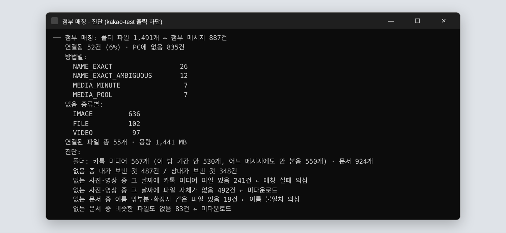
매칭 방법 (MatchMethod)
| NAME_EXACT | 문서: 메시지의 파일명과 폴더 파일명이 정확히 일치. 중복 접미사 3종 이름 (1).ext(Windows) / 이름-1.ext(카카오PC) / 이름(1).ext(보낸 쪽) 제거 후 비교 |
| NAME_EXACT_AMBIGUOUS | 같은 이름 후보가 2개 이상 — 연결은 하되 확신 낮음으로 표시 |
| BUNDLE_EXACT / NEAR | "사진 N장" ↔ KakaoTalk_YYYYMMDD_HHMMSSmmm.jpg + _01…_(N-1) 묶음. 시각과 개수가 맞으면 EXACT, 근접이면 NEAR |
| MEDIA_MINUTE / NEAR / POOL | 단일 사진·영상: 파일명 시각이 메시지 분과 같음 / 근접 / 같은 날 남은 파일 풀에서 배정 |
| NONE | 연결 실패 → 진단 블록으로 원인 분류 |
진단 블록이 말해주는 것
- 내가 보낸 것 487건 — 받은 파일 폴더에는 내가 보낸 파일이 없다(실제 폴더 구조로 확인). 매칭 대상 자체가 아님
- 그 날짜에 파일 자체가 없음 492건 / 비슷한 파일도 없음 83건 — 미다운로드 또는 다운로드 기한 만료
- 그 날짜에 카톡 미디어 있음 241건 — 매칭 실패 의심. 대부분 같은 날 여러 묶음이 있어 분 단위로 못 가른 경우
- 이름 앞부분 같음 19건 — 10번
--docs로 하나씩 확인
KakaoTalk_20260901_113756756.png: 파일명의 시각은 다운로드 시각이 아니라 메시지 시각입니다. 반대로 탐색기 "날짜" 열은 사진은 EXIF, 오피스는 내부 저장일이라 신뢰할 수 없어 문서는 이름으로만 매칭합니다.10안 붙은 문서 진단 — kakao-docs.cmd 재현
연결 안 된 문서 메시지마다 "폴더에 이름 앞부분·확장자가 같은 후보"를 나열합니다. 매칭 규칙을 더 넣을지, 그냥 다른 파일인지 사람이 판단하는 화면. (예시의 파일명은 가려 썼습니다)
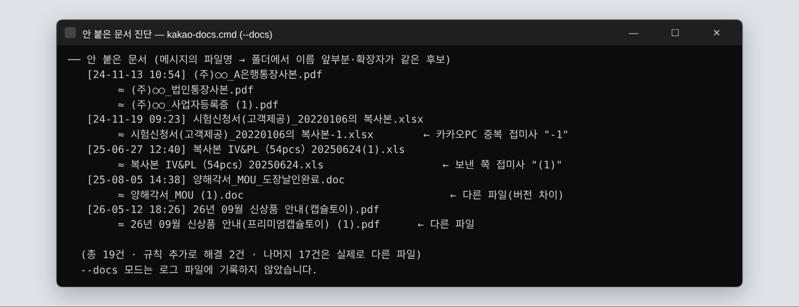
-1, 공백 없는 (1)), 나머지 17건은 실제로 다른 파일(버전·다른 서류).| 한 줄 형식 | [yy-MM-dd HH:mm] 메시지의 파일명 → 아래 ≈ 후보 파일명 여러 개 |
| 판단 기준 | 후보가 원본의 중복 접미사 변형이면 규칙 추가 대상. "통장사본 → 법인통장사본", "캡슐토이 → 프리미엄캡슐토이"처럼 내용이 다르면 다른 파일로 두고 건드리지 않음 |
| 로그 | 파일명에 거래처·서류 이름이 들어가므로 --docs 출력은 로그에 남기지 않음 |
11폴더 구조와 데이터 위치
화면은 아니지만 사용자가 탐색기에서 마주치는 장소들. README와 트레이 메뉴가 가리키는 곳입니다.
| 폴더 | 경로 | 역할 |
|---|---|---|
| 카카오톡 받은 파일 | 내 문서\카카오톡 받은 파일 | 카카오톡 첨부가 떨어지는 곳. 모든 방 공용, 하위 폴더 있음, 내가 보낸 파일은 없음. 비서ON은 읽기만. 기본 위치면 동의 화면에 자동 등록 |
| 카카오톡 내보내기 | 내 문서\비서ON\카카오톡 내보내기 | 카카오톡 "대화 내용 내보내기 → 텍스트 저장" 파일을 넣는 곳. 비서ON이 만들어 둠. 다음 버전에서 여기 들어온 txt를 자동 감지(12번) |
| 데이터 | %LOCALAPPDATA%\BiseoON | collector.db(SQLCipher AES-256) · consent.json · 키 사본(DPAPI/복구코드 래핑) · vault\ 암호화 사본 보관소 · logs\ 일자별 로그 |
| 프로그램 | %LOCALAPPDATA%\Programs\BiseoON | BiseoON.exe 단일 파일(self-contained). 관리자 권한 불필요 |
DB 테이블 (현재)
files— 경로·크기·mtime·SHA-256·마지막 확인 시각scan_runs— 검사 시작/종료·상태·신규 건수gap_ledger— PC 꺼져 있던 구간app_state— 키·값 설정
다음 버전에서 추가 예정: kakao_rooms, kakao_messages, message_attachment_links, message_state_events, import_sessions
12다음 버전 — 대화방 카테고리 질문 설계안
"개인이랑 업무랑 섞이면 헷갈린다"는 요구에서 나온 화면. 내보내기 폴더에 처음 보는 방의 txt가 들어오면 한 번 묻고, 답에 따라 저장·분석 범위가 달라집니다. 아직 구현 전.

| 카테고리 | 저장 | 분석(약속·미회신·파일) | 외부 AI |
|---|---|---|---|
| 업무 | O | O | Privacy Mode에 따름 (STRICT=없음 / MASKED / STANDARD / CLOUD ASSIST) |
| 개인 | O (암호화) | X | 절대 없음 |
| 혼합 | O | 업무 관련만 선별 | 선별분만, Privacy Mode에 따름 |
| 수집 안 함 | X | X | X — 파일 무시, 다시 묻지 않음 |
Import 흐름 (설계)
내 문서\비서ON\카카오톡 내보내기에 txt 감지- 파서로 요약 → 처음 보는 방이면 이 화면으로 카테고리 질문
- 파싱 → 이전 Import와 재대조(Reconciler: 삭제 관측 시 원문 미덮어쓰기) → 첨부 매칭
- SQLCipher에 저장(
kakao_rooms,kakao_messages,message_attachment_links,message_state_events,import_sessions) - 상태 창에 "대화방 · 메시지 · 연결된 첨부 · PC에 없는 첨부" 카드 추가
messages/attachments 테이블이 없고 건수 통계만 올라갑니다. 카카오톡은 Export Import 방식만 사용하며 DB 해독·UI Automation은 하지 않습니다.